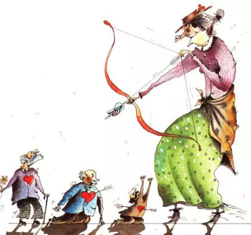
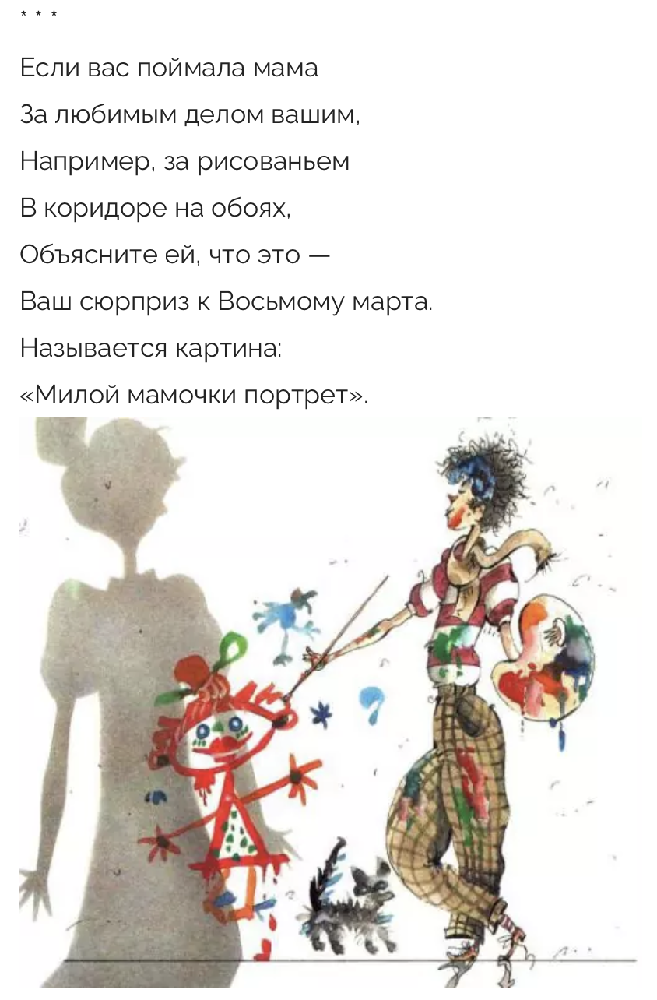
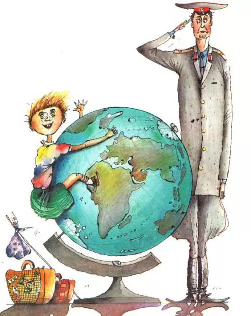

Вредные советы. Остер Г.Б.
Недавно ученые открыли, что на свете бывают непослушные дети, которые все делают наоборот.
Им дают полезный совет: «Умывайтесь по утрам» — они берут и не умываются.
Им говорят: «Здоровайтесь друг с другом» — они тут же начинают не здороваться.
Ученые придумали, что таким детям нужно давать не полезные, а вредные советы.
Они все сделают наоборот, и получится как раз правильно.

Девочкам
"Родился девочкой — терпи
Подножки и толчки.
И подставляй косички всем,
Кто дернуть их не прочь.
Зато когда-нибудь потом
Покажешь кукиш им
И скажешь: «Фигушки, за вас
Я замуж не пойду!»

